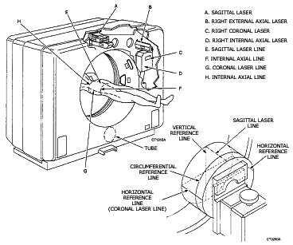
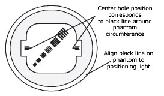

Operating Documentation
Direction 5112972-800, Rev# 2
CT Planned Maintenance Procedures
Operating Documentation |
| Required Persons | Preliminary Reqs | Procedure | Finalization |
|---|---|---|---|
| 1 | Timing Not Applicable | 15 mins | Timing Not Applicable |
Procedure Effectivity:
| Assembly: | GANTRY |
| Subassembly: | Laser Lights |
| Purpose: | Check Laser Accuracy |
| Last Revised: | July 1995 |
| Item | Qty | Effectivity | Part# | Manufacturer | |
|---|---|---|---|---|---|
| Phantom | 1 | - | - | - | |
| Item | Qty | Effectivity | Part# | Manufacturer |
|---|---|---|---|---|
| Tape | - | - | - |
Place resolution phantom 46-241852G1 on phantom holder.
Center the phantom using the calcheck program. Use the section of the phantom with just water and no wedges.
After phantom is centered to isocenter, turn on alignment lights. Check that the coronal laser lines (“G" in Illustration 1) are centered on the horizontal reference line on the phantom. For an additional check, tilt the Gantry 20 degrees and re-check. When finished, tilt back to zero. Next, the sagittal laser line (“E" in Illustration 1) should be centered to the top of the phantom, perpendicular to the vertical reference line (see Illustration 1). You may need a piece of tape on the top of the phantom to see the laser since the plexiglas is clear and, therefore, non-reflective. This sagittal line will also project onto the cradle. It should divide the cradle evenly. (The spec for sagittal and coronal laser is +/- 3mm).
Illustration 1: Laser Alignment Light Accuracy Setup

Turn lasers on again if they are off. Center phantom to the circumferential reference line using the internal axial line (see “H" in Illustration 1). Press Internal Landmark. Gantry display for cradle position should read 0mm. Take a scan. Use 120kV, 170mA, 10mm, 25cm FOV, 2 sec.
When your image comes up, you will see line pairs ( Illustration 2), but these are unimportant for this test. What you are looking for is the thin horizontal lines centered on the left and right sides of the square holding the line pairs (see Illustration 2). One line on each side is longer than the others. The position of these two longer lines corresponds exactly to the black line scribed on the circumference of the phantom. Therefore, if the two longer lines are centered, the internal axial lasers are centered (spec = +/- 1.5 mm spacing between lines is 1mm).
Illustration 2: Resolution Phantom Scanned Image

To check external axial lasers, drive the phantom out to the external axial line (“F" in Illustration 1). Center the external axial right and left lasers on the phantom circumferential reference line by moving the cradle in or out as needed.
| NOTE: | Step 6 requires that the internal axial lasers in the previous step are verified to be correct. |
Press External Landmark on the table control pad. Press advance on the same pad and hold until the cradle stops driving. The phantom is now centered to the axial scan plane. If the internal axial right and left lasers were correct from the preceding step, they should now be focused on the phantom circumferential reference line. If not, the external lasers need adjustment. Do not remove these lasers. The correct procedure is to readjust laser lights.
No finalization required.